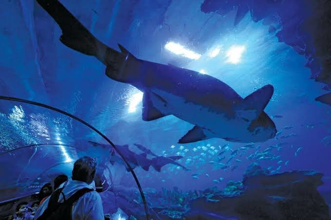
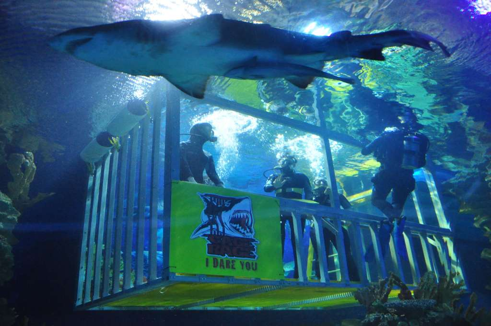

Back
Aquaria KLCC
Go to Bottom
The Aquaria KLCC is an oceanarium located beneath Kuala Lumpur Convention Centre within Kuala Lumpur City Centre in Kuala Lumpur, Malaysia.Featuring 60,000 square feet (5,600 m2) in two levels with a 90-metre (300 ft) underwater tunnel, Aquaria KLCC houses over 250 different species and over 5,000 land and aquatic animals from Malaysia and around the world. Interactive information kiosks on fish and turtle conservation. It includes a themed retail area of about 5,000 square feet (460 m2). Aquaria KLCC is based on the journey of water from the land to the sea. The journey starts in the misty highlands, down through rivers, through the rainforest and mangroves to the coral reefs into the deep blue sea.
Exhibits

Evolution zone
Touch pool
Jewels of jungle
Ship wreck
The stream
Deep forest
Flooded forest
The coastal
Living ocean
wierd and wonderful
Experience

Cage rage
Dive with Shark
Sleep with Shark
Discovery Hunt
Marriage Proposal
Go to Top